Promotional Items & Print
Sony leaned into the quirky, black-and-white identity for the game's promotion. Rather than shipping a loud, screenshot-heavy sleeve, the European release used a stark cover centered on Vibri. Press kits went out to European outlets in 2000 alongside a companion music CD and a disc of promo assets, including an exclusive interview with Masaya Matsuura.
In Japan, NanaOn-Sha also produced a tie-in art book called Vib-Rihon (ビブリホン), published by Sony Magazines, full of storyboards, character sketches, and 3D studies of Vibri.


The game's afterlife as a cult favorite has only grown since the PSN re-release. Its austere look, its willingness to hand level design over to the player's own CD collection, and the fact that a rabbit named Vibri can be doodled in four strokes have all helped it stay quietly legendary decades after launch.
Promotional Shirt Package
A promotional T-shirt from Sony Computer Entertainment Japan, sold nowhere and marked NOT FOR SALE. The black shirt carries Vibri on the front in the game's white line art, with a speech bubble in the same hand-drawn katakana as the box: オコノミCDデアソブ, "play with your favourite CD". The back repeats the Japanese ビブリボン logo above the four button symbols. It came sealed in a clear sleeve behind a red insert printed with the PlayStation mark, the same Vibri artwork and a row of the character's forms.
.png)
.png)
.png)
.png)
.png)
Vib-Ribbon X'mas Disc
For Christmas 1999, Tsutaya stores in Japan gave away a Vib-Ribbon-branded 8cm mini CD, the ビブリボン X'mas ディスク (catalogue number XMAS-2000, marked NOT FOR SALE). It was a joint promotion for the PlayStation game and for the Symphonic Orgel (シンフォニックオルゴール) series of antique music-box albums sold at Tsutaya. The disc carries a single track, もみの木 (Momi no Ki, "O Tannenbaum"), lifted from OPUS 4: Christmas Carol, so the whole thing is a music CD you can drop into Vib-Ribbon and play as a level. The sleeve front says exactly that, and the small print reminds you the disc alone won't run the game.
The back of the sleeve is a straight advert for the four Symphonic Orgel OPUS volumes, ¥2,800 each, with a phone number and web address for ordering. It was produced by D3 Publisher and Medix under Sony Computer Entertainment's copyright. Each disc came tucked into a black Vib-Ribbon envelope with Vibri carrying a present on the front, made so that buyers could post the disc to someone as a Christmas card. For two decades the disc was known only from that description; a copy finally surfaced in 2024, and the photos below are of that copy, documented on Discogs.

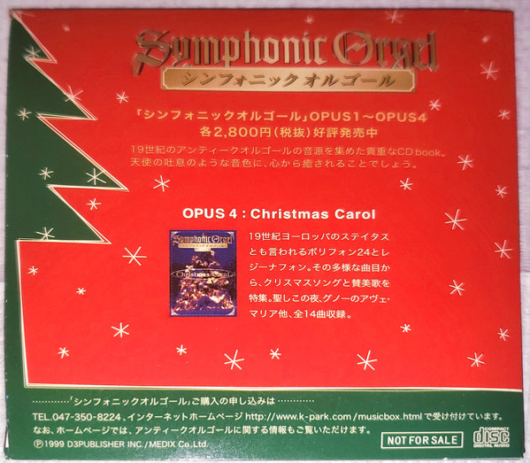


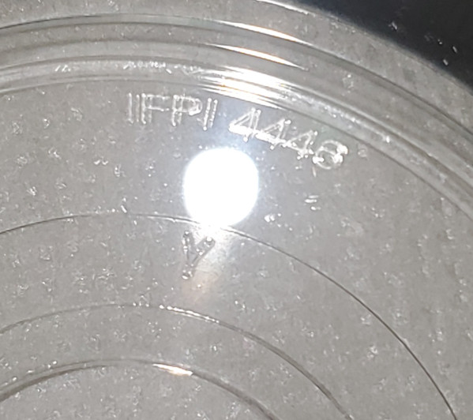

Videos
The single track on the disc, and the disc being played through Vib-Ribbon as a level, recorded after the copy above was found.


Press Kit Assets
The artwork disc that shipped with the Vib-Ribbon press kit gave magazines and retailers a ready-made set of high-resolution vector art to drop into features and adverts. Everything here is drawn in the same handful of white strokes as the game itself: a run of PlayStation-branded posters in each of the standard paper sizes, an A3 key-art collage, a colour manga strip explaining the swap-in-your-own-CD trick, and numbered character sheets cataloguing Vibri in every form from Super Vibri down to the worm. The repeating logo ribbons at the bottom were cut for page borders and headers — the same strips that scroll across the top of this site.


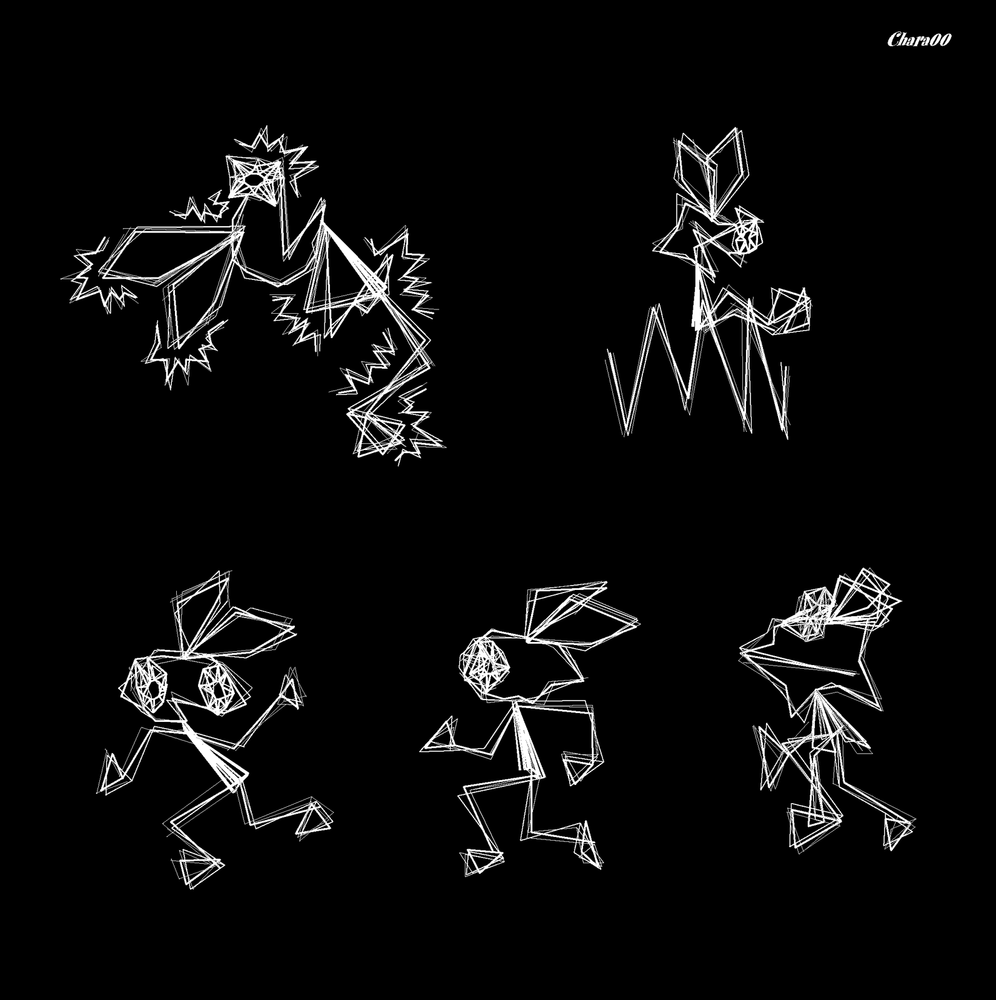
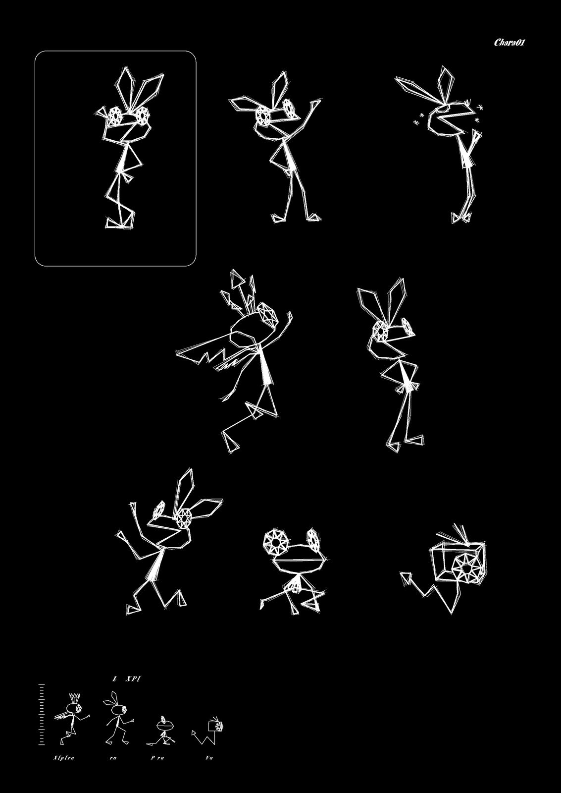

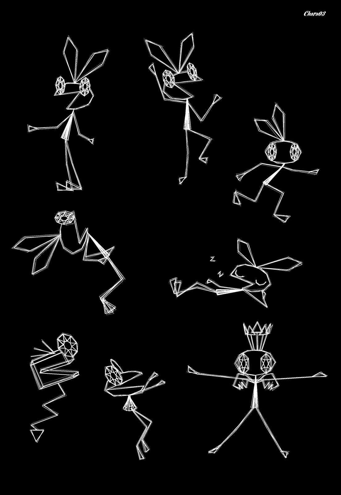

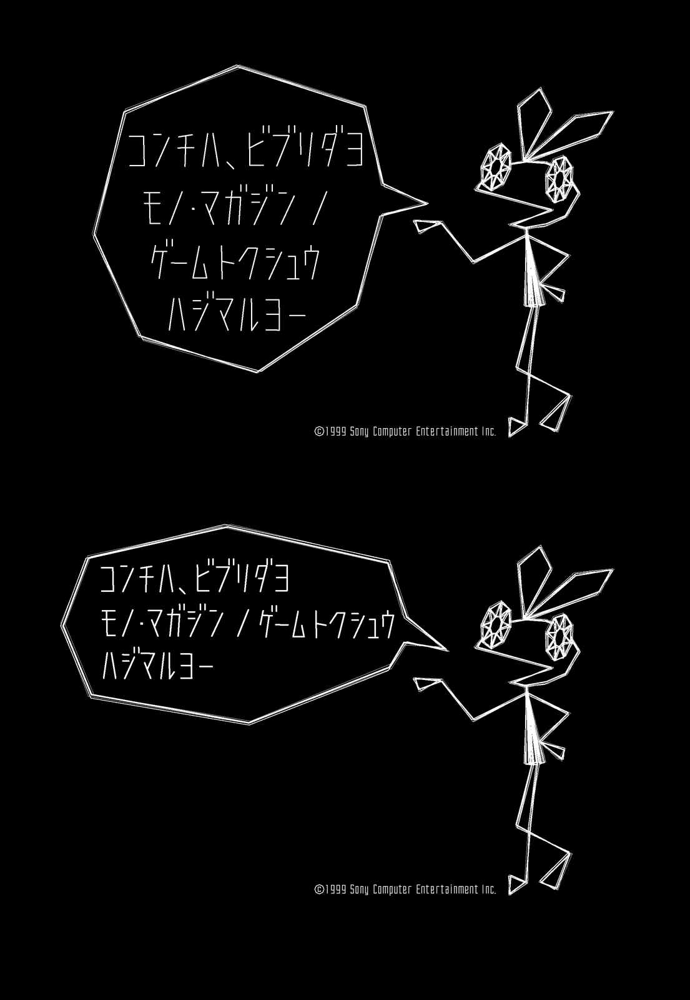
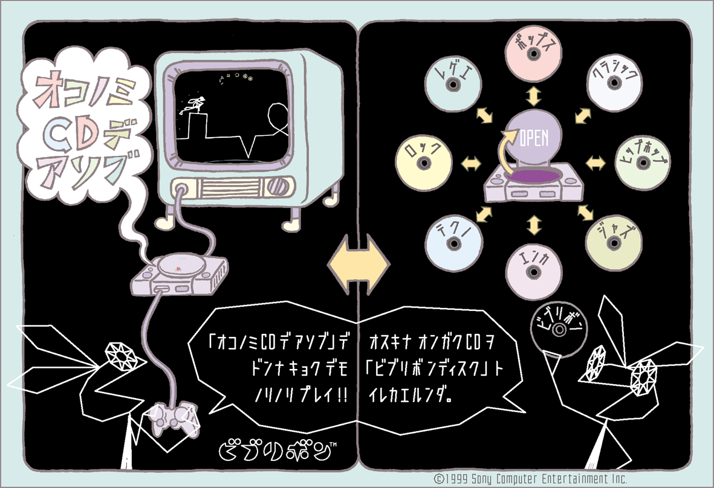

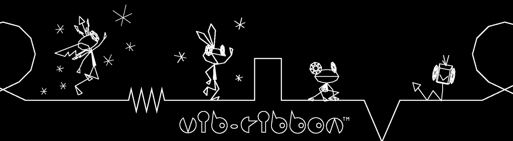

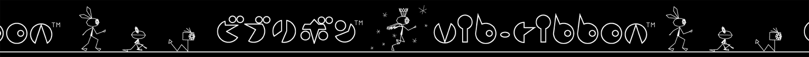

Screenshots
The same disc carried a set of sixteen numbered screenshots for print use, captured straight from the game and showing Vibri in every form — Super Vibri, the standard rabbit, and the worm — working through pits, loops, blocks, zig-zags, and spiky chains, with the coloured shape-strings at the top marking each track’s progress.
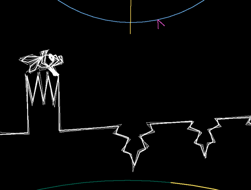


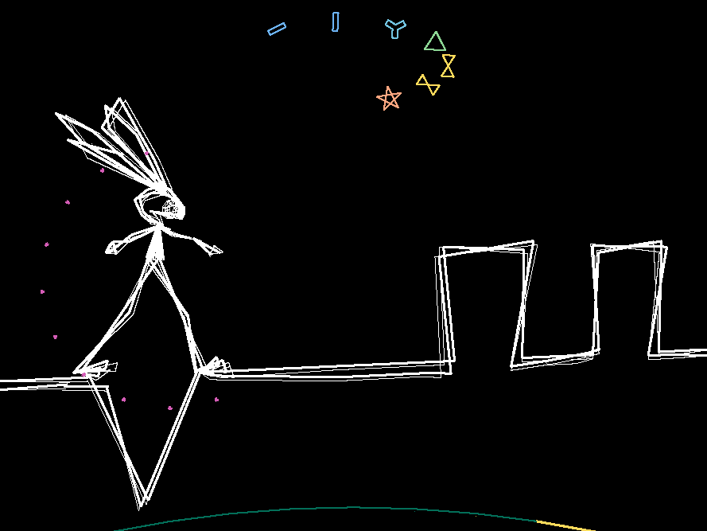


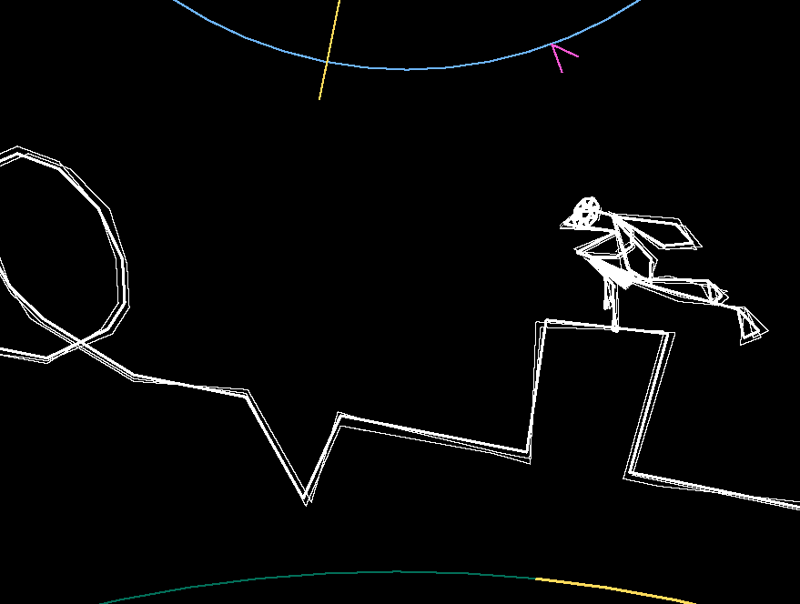

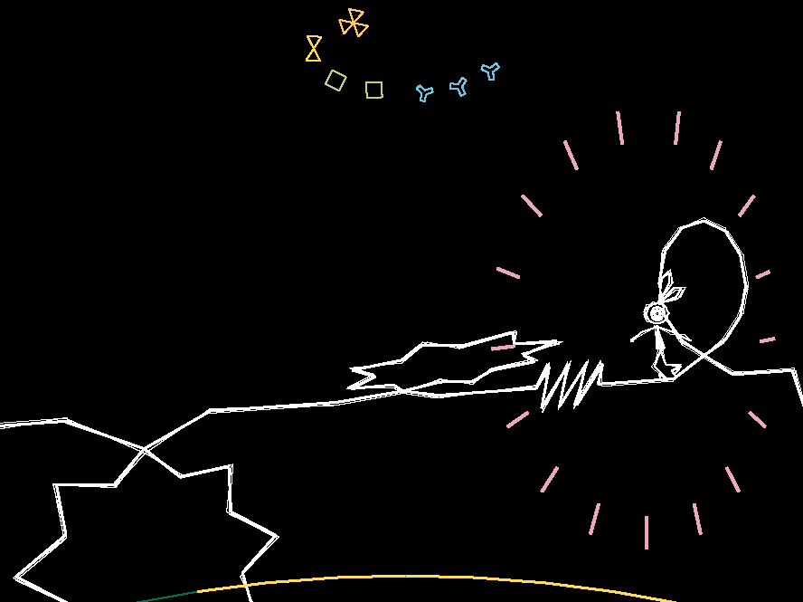